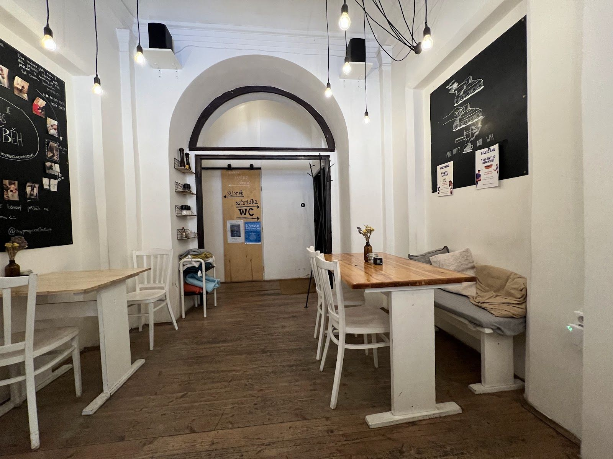
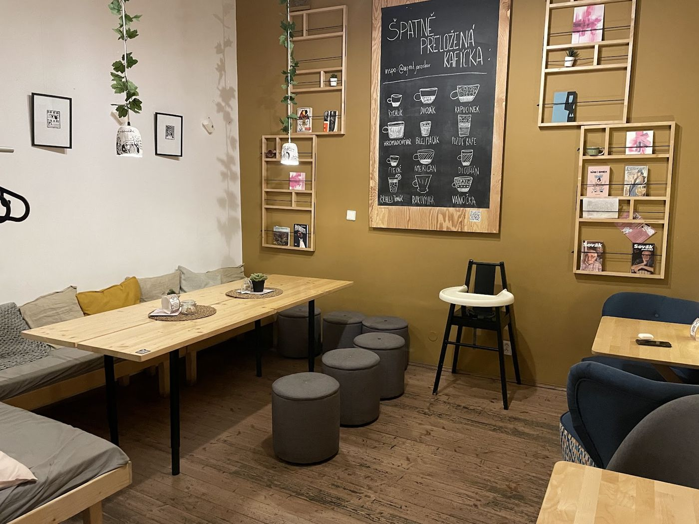
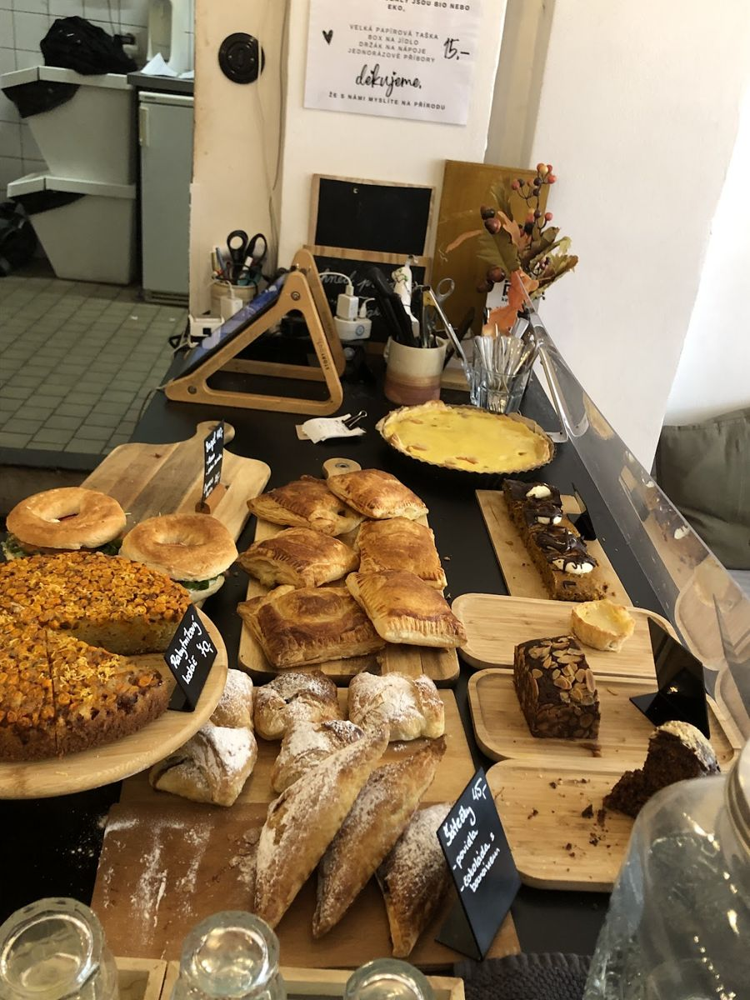
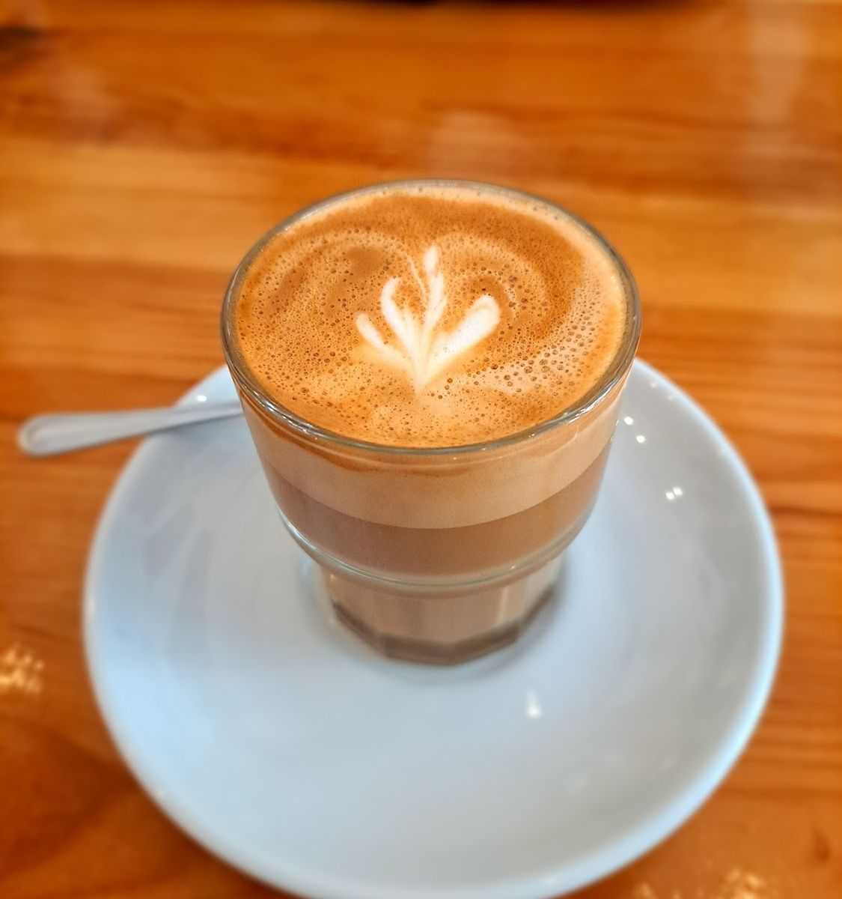
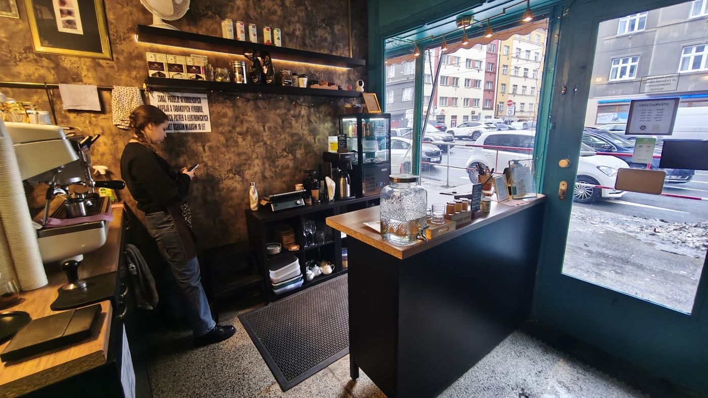
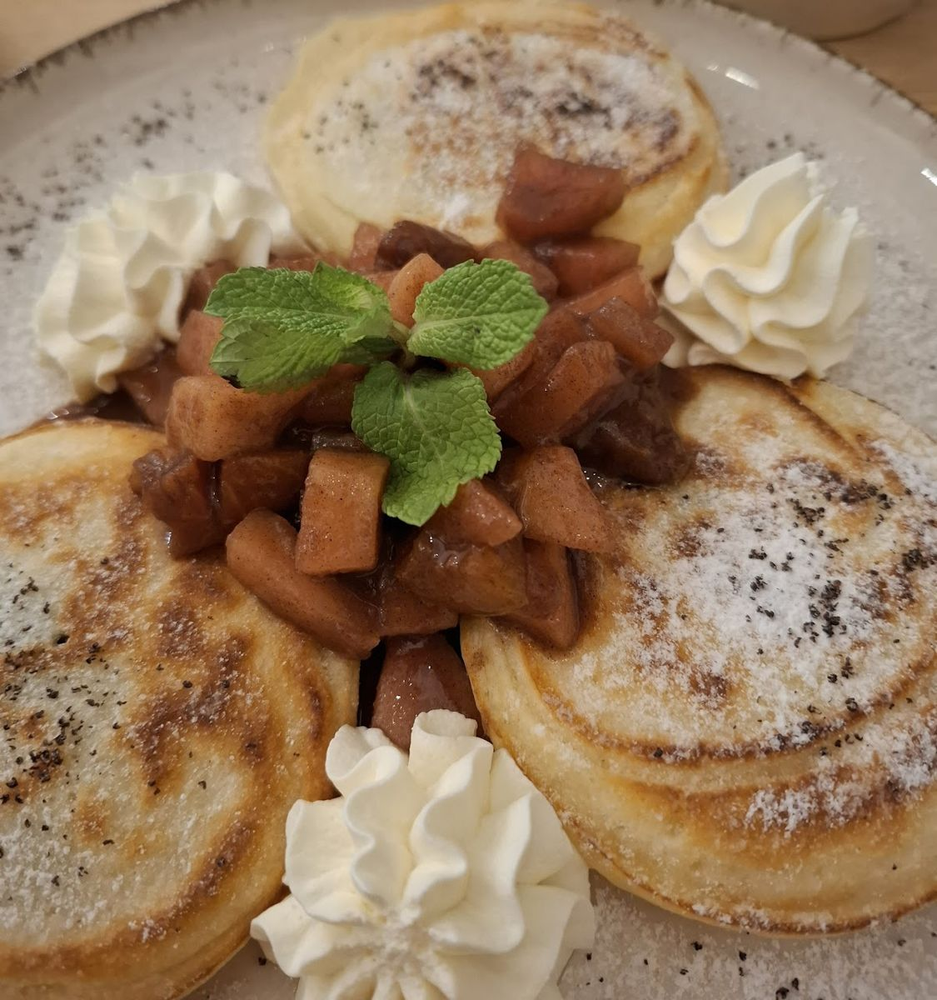
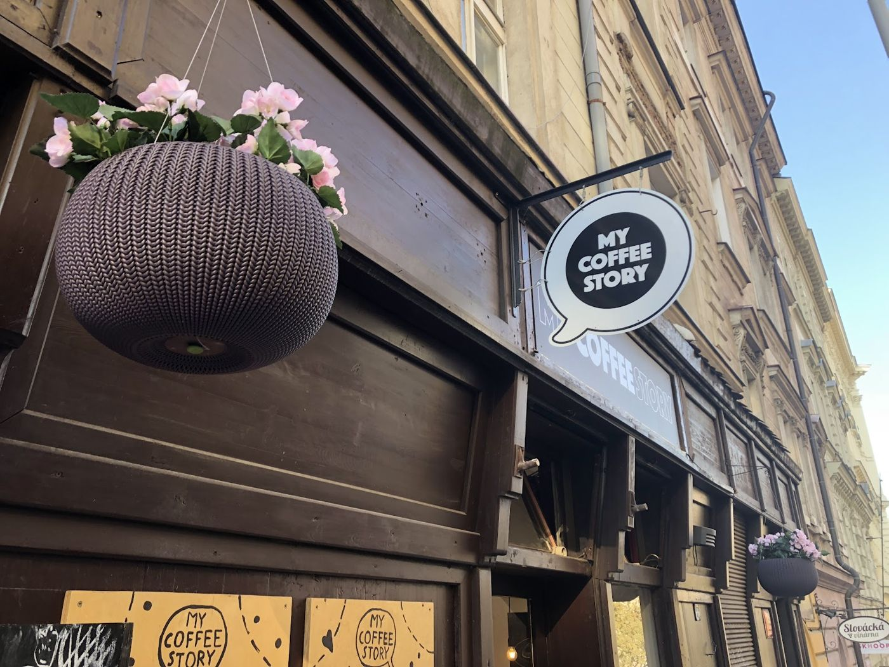

Na Želivského, naproti Žižkovskému divadlu Járy Cimrmana. Rychlé espresso s sebou, nebo koláč a hodina klidu u stolu.
Otevřeno
4,7
Z ulice není vidět. Projdete kavárnou, pár schodů, a jste v klidu, ve stínu a v zeleni. Kávu a koláč si vezmete s sebou od pultu.
„Úchvatná stinná zahrádka. 33 schodů. Výborná káva. Milá obsluha.“
Malý prostor, za rohem ještě jedna místnost pro větší partu. Psi vítáni.





ze 785 hodnocení na Google
Všechny recenze na GoogleSkvělá atmosféra, zde platí, co je malé, to je milé. Kavárnička s retro atmosférou vás vtáhne dovnitř a je konec 21. století. K tomu výborná káva a něco z domácích koláčů. Pohoda.
Útulná kavárna na rychlé kafe nebo s sebou. Výborná káva jak espresso, tak batch. Velký výběr sladkého. Malinový křehký koláč byl výborný. Skvělý přírůstek na tuhle stranu Žižkova.
Oáza klidu nebo rychlá záchrana při uspěchaném dni přímo u zastávky Biskupcova. Výborná káva i matcha a luxusní čerstvé koláče a dezerty, jako od babičky :) moc doporučuji
Několik let chodím kolem, ale konečně nastal čas se zastavit na brunch. Obě varianty, jak vajíčka, tak avokádový chleb, skvělý.
J. Želivského 1801/22, Praha 3
naproti Žižkovskému divadlu Járy Cimrmana, u zastávky Biskupcova
Otevřeno
| Pondělí | 8:00 – 18:00 |
| Úterý | 8:00 – 18:00 |
| Středa | 8:00 – 18:00 |
| Čtvrtek | 8:00 – 18:00 |
| Pátek | 8:00 – 18:00 |
| Sobota | 9:00 – 15:00 |
| Neděle | 9:00 – 15:00 |
